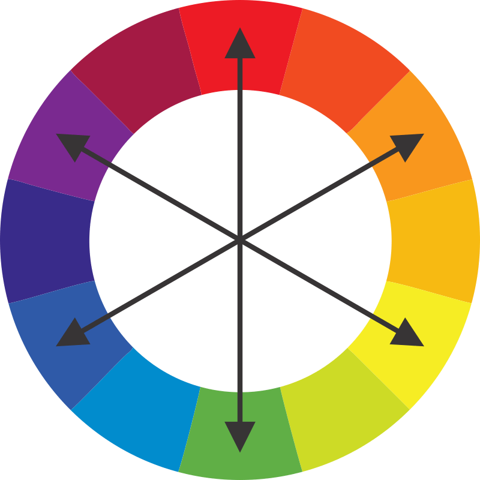
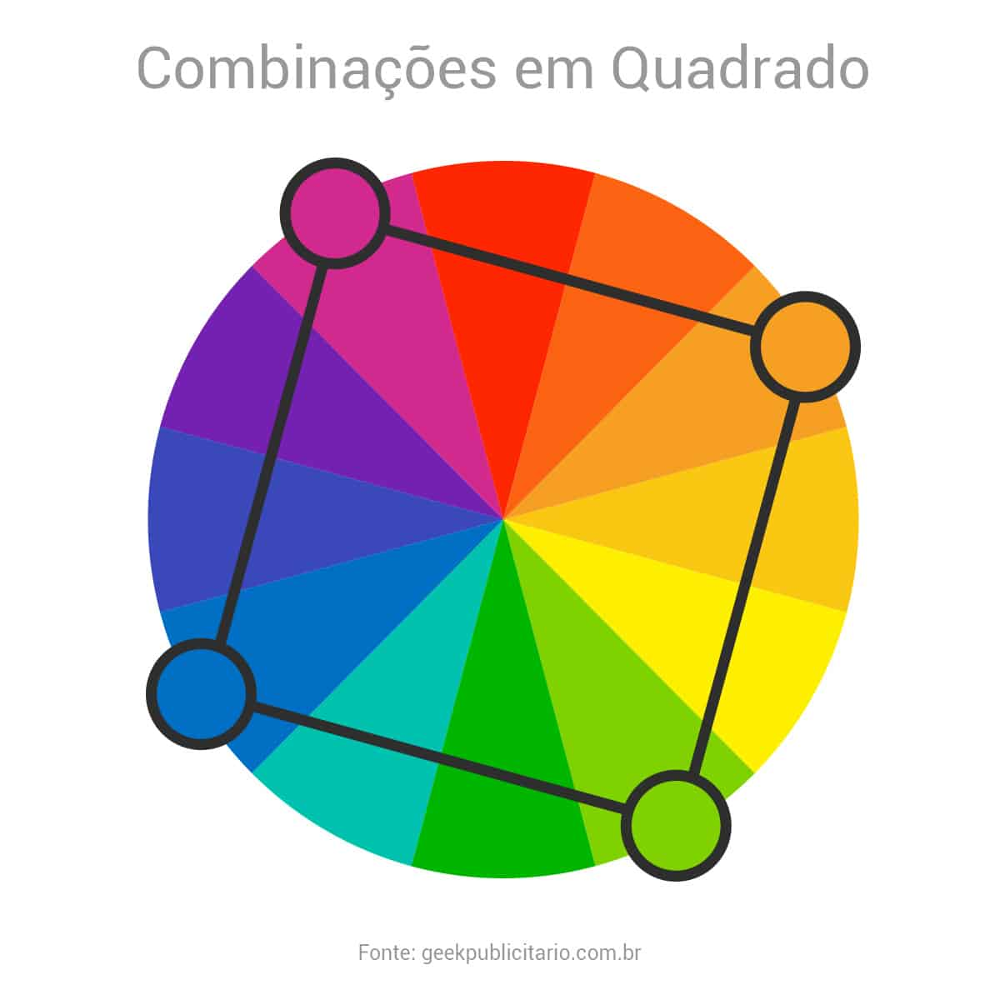
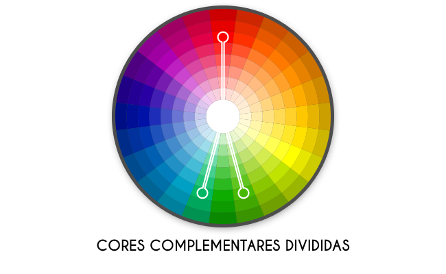

Quais as Harmonias Cromáticas?
Monocromática - Conta com diferentes tonalidades de uma mesma cor.

Complementar - Combina cores contrárias seguindo o circulo cromático.
Análoga - Usa cores próximas no circulo cromático, normalmente 3 cores.

Triádica - Utiliza três cores posicionadas em formato de um triângulo no circulo cromático.

Quádrupla - Utiliza quatro cores posicionadas em formato de um quadrado no circulo cromático.
Complementar Dívidida - Combina uma cor com as duas outras cores próximas a sua contrária.
